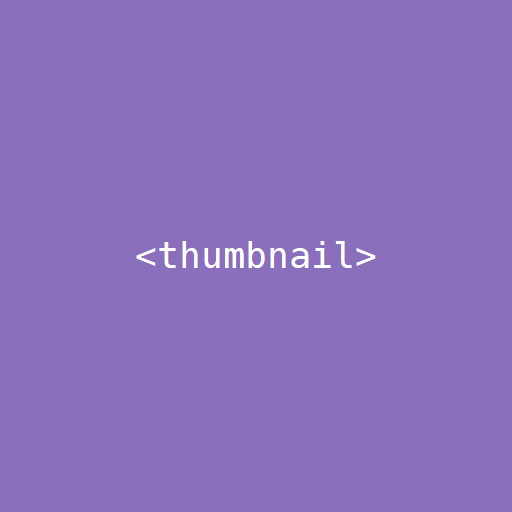

>> [ show_and_tell() for project in Marvin.Projects ]
"""
My personal website containing my
Curriculum Vitae,
Learning History,
and more!
Stack: Django, Google Cloud Platform,
Postgresql, Bootstrap
"""

"""
Scripts:
Reddit Data Pipeline
— use scripts to move
personally generated data from Reddit.
Cloud SQL Proxy Wrapper
— script tool
to connect PSQL on my machine to
Cloud SQL via the namesake proxy.
AUD-PHP arbitrage
— webscraping two of my banks for differences in their AUD/PHP rates.
amongst other work-related scripts!
"""

"""
Hopefully a simple OOP app.
Kotlin is my language of choice.
Imaginary stack:
Kotlin, Compose on Desktop
"""


[None, None, None, None]
>> # ;)
>> exit()